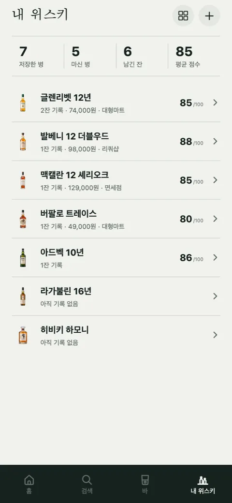

첫잔 [6] — 잔량, 개봉일, 위시, 연령 확인을 지웠다
이번 주에 만든 것보다 지운 것이 많습니다. 시장조사가 "구체적으로 요구된다"고 적어 둔 필드들을 하나씩 걷어냈고, 오늘은 저장 목록을 하나로 줄였습니다.
조사가 요구한 것
8월 시장조사의 결론 중 하나는 이랬습니다. 인벤토리, 시음 노트, 별점, 위시리스트를 다 갖춘 앱이 없고, 구매가·개봉일·잔량·다 마신 날짜 필드가 구체적으로 요구된다. 기획 개선안에는 개봉 n일차를 자동으로 보여 주자는 항목까지 있었습니다. "뚜껑 딴 직후와 3주 뒤"를 비교하는 게 애호가 콘텐츠의 단골이니까요.
다 맞는 말이었고, 다 만들었고, 다 지웠습니다.
| 조사가 요구한 것 | 결정 |
|---|---|
| 잔량(%) | 명세 단계에서 이미 뺌. 실사용에서 유지되지 않는 허영 지표 |
| 보유 → 개봉 → 비움 상태 | 지움. 상태를 묻는 순간 기록이 숙제가 된다 |
| 개봉 n일차 | 지움. 개봉일을 안 적으면 계산도 없다 |
| 마셔볼 목록(위시) | 지움. 검색 결과에 별표 하나 더한 것과 다르지 않았다 |
| 구매가 | 남김. 단, 빈칸이어도 된다 |
왜 지웠나
만들어 놓고 써 보니 전부 사용자에게 뭔가를 시키는 칸이었습니다. 병을 저장하면 보유인지 위시인지 묻고, 마시면 개봉했냐고 묻고, 잔량은 마실 때마다 갱신해야 합니다. 안 하면 화면이 거짓말을 합니다. "개봉 12일차"가 실은 두 달 전 딴 병이라면 그 숫자는 없는 게 낫습니다.
저장 목록을 내 위스키 하나로 줄였습니다. 갖고 있든, 사고 싶든, 바에서 한 잔 마셨든 그냥 내 위스키입니다. 기록은 잔 단위로 남고, 병의 상태는 묻지 않습니다. 옛 데이터의 상태 필드는 읽기만 하는 호환용으로 남겨 두고 화면에서는 쓰지 않습니다.

연령 확인도 뺐다
판매 링크를 열기 전에 나이를 묻는 화면이 있었습니다. 그저께 뺐습니다. 이유는 둘입니다. 첫째, 스토어가 이미 합니다. App Store 17+, Play 청소년이용불가 등급이면 앱을 받는 단계에서 걸러집니다. 둘째, 실기기에서 터졌습니다. 생년을 입력하려고 숫자 키패드가 올라오면 확인 버튼을 덮어서 진행이 안 됐습니다. 그 버그를 고치는 대신 화면을 없앴습니다.
판매 자체는 애초에 안 합니다. 주류 통신판매는 무면허 판매라 형사 처벌 대상이고, 우리는 가격을 보여 주고 파는 곳으로 보내는 데까지만 합니다. 그 링크를 여는 데 게이트를 하나 더 두는 건 우리 책임을 키우는 일이지 줄이는 일이 아니었습니다.
오늘 옮긴 탭
프로필 탭도 없앴습니다. 설정은 홈 오른쪽 위 톱니바퀴로 갔고, 빈 자리에 위스키 바 찾기가 들어왔습니다. 친구가 네이버 지도에 모아 둔 983곳을 본인 동의를 받아 옮긴 목록입니다. 탭은 홈, 검색, 바, 내 위스키. 넷 다 명사이고, 넷 다 무언가를 시키지 않습니다.
남긴 규칙
저장 목록은 하나. 병의 상태를 화면에서 묻지 않는다. 잔량과 개봉 후 변화는 다시 넣지 않는다.
남은 걱정
잔량을 원하는 사람은 분명 있습니다. 조사에서 그 요구를 읽었으니까요. 다만 원하는 것과 유지하는 것은 다르고, 안 유지되는 숫자는 없는 것보다 나쁘다는 쪽에 걸었습니다. 이게 틀렸다면 나중에 되돌리기는 쉽습니다. 옛 필드는 아직 데이터에 살아 있습니다.

Seok
연구하면서 개발합니다. 배터리 재료를 원자 단위에서 계산하는 법을 바닥부터 배우는 중입니다. → 글 더 보기